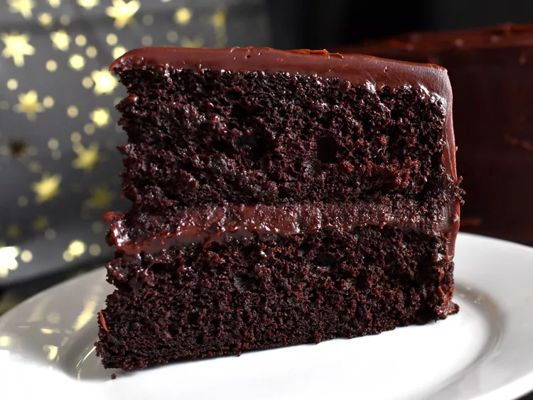

Chcolate Cake

Description
This moist chocolate stout cake with chocolate caramel frosting gains intensity and flavor from stout beer. It pairs beautifully with the rich, luscious chocolate-caramel frosting. Give yourself plenty of time to make this cake—it requires several hours of cooling time.
Ingredients
- 2 cups dark chocolate chips (such as Ghriradelli® 60% Cacao Bittersweet Chocolate Chips)
- 1 1/2
1 1/2 cups white sugar
- 1/4 cup water
- 3 tablespoons light corn syrup
- 1/4 teaspoon salt
- 1 1/2 cups heavy cream
- 2 teaspoons vanilla extract
- 3 tablespoons Irish cream liqueur (such as Bailey's®)
- 3 tablespoons unsalted butter
Steps
- Make frosting: Place dark chocolate chips in a large bowl; set aside.
- Combine 1 1/2
Combine 1 1/2 cups white sugar, water, and corn syrup in a light colored, tall-sided saucepan. Place pan over medium heat and cook until mixture begins to turn a deep amber color, swirling pan often to combine ingredients; about 15 minutes. Remove pan from heat and carefully pour in heavy cream (mixture will bubble up rapidly and then seize, this is ok). Place pan back over low heat and bring to a boil, stirring constantly. Allow mixture to boil for 5 minutes, stirring constantly, then immediately pour caramel over the chocolate chips. Allow mixture to stand for 1 minute.
- Gently stir until chocolate is melted and smooth. Add in 2 teaspoons vanilla and Irish Cream and mix until combined. Add in butter 1 tablespoon at a time, making sure each addition is fully incorporated before adding the next, until all 3 tablespoons of butter are incorporated. Loosely cover bowl with a kitchen towel and set aside to cool to room temperature, stirring occasionally (this will take 4 to 6 hours).
- Combine stout beer
Combine stout beer and 1 tablespoon dark brown sugar in a saucepan set over medium heat. Bring to a simmer, stirring occasionally, until mixture has reduced to 1 cup, 8 to 10 minutes. Remove from heat and allow to cool to room temperature, about 20 minutes.
- Preheat the oven to 350 degrees F (175 degrees C). Grease and flour 2 (9-inch) round cake pans.